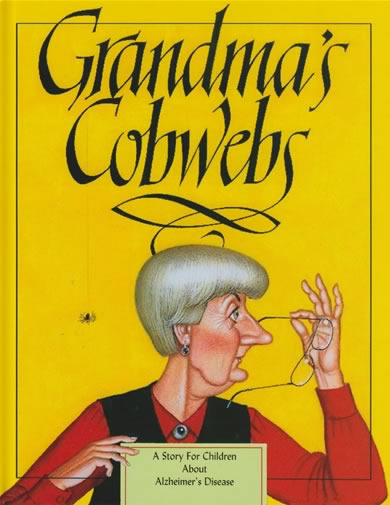

Grandma's cobwebs
By Ann Frantti
Grandma tells me about her Alzheimer's disease. "It's like having my mind filled with cobwebs", she says. "It doesn't hurt or make me feel sick. It just makes it hard for me to think clearly and figure out how to do things.
Claire's parents teach her facts about Alzheimer's disease. They don't, however, pay much attention to how Claire is feeling about the changes in her grandmother's behaviour. Claire tells her friends silly stories about Grandma to make them laugh. Afterwards she feels guilty, gets in a fight and is grounded. While she is grounded, Claire realizes that Grandma, who was the best grandmother in the world before she developed Alzheimer's disease, is still the best grandmother in the world. Grandma's Cobwebs helps children understand the physical and emotional aspects of Alzheimer's disease. Grandma's Cobwebs, also, introduces the Three R's of Alzheimer's disease: Relax, Remember and Respect. An educational supplement of questions and answers for children about Alzheimer's disease is included with Grandma's Cobwebs.
Age Range: 4 - 6 years
Find out more:
here
Read the story: here